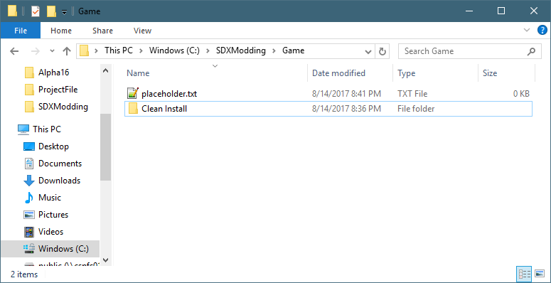
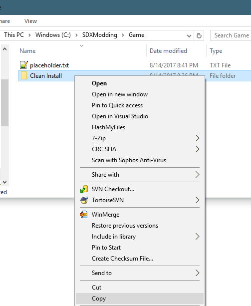
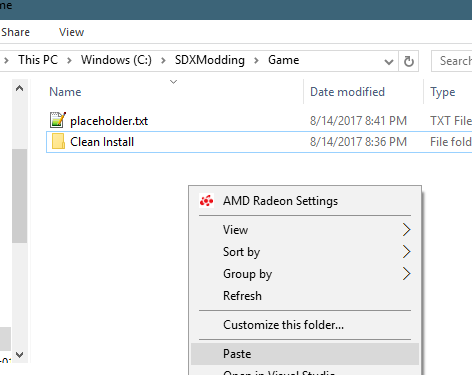
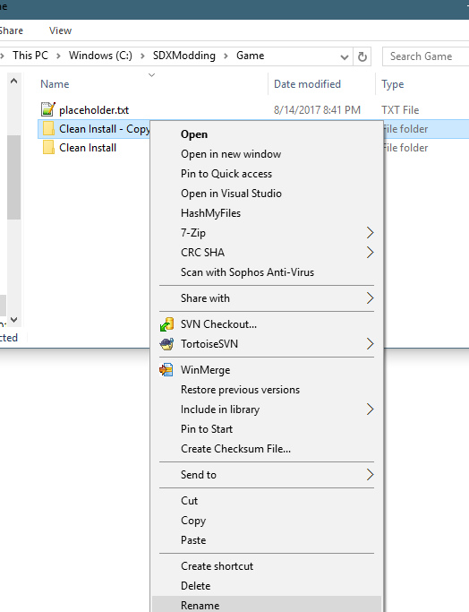
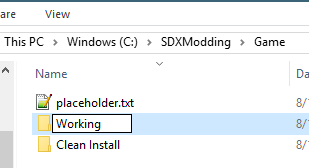

The second folder you will create will be called a Working. This is where you will be adding your SDX mods, trying out new things.
Using Explorer, navigate to your "C:\SDXModding\Game" Folder.

Right click on the "Clean Install" folder, and click on "Copy"

Right click on the Explorer Window again, and select "Paste"

This will make a new copy called "Clean Install - Copy".
Right click on "Clean Install - Copy", and select "Rename"

Rename it to "Working"

There we go! Now we have two copies of the game. One for a back up, and the other as our working folder.
Created with the Personal Edition of HelpNDoc: Easily create EPub books